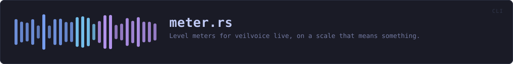

crates/veilvoice-cli/src/meter.rs
veilvoice-cli · 343 lines · read the source
Level meters for veilvoice live, on a scale that means something.
Why the old one was wrong
The first meter was linear: a peak of 0.5 filled half the bar. That is arithmetically fine and useless as a meter, because loudness is not linear. Ordinary speech recorded at a sensible level peaks around -12 dBFS, which is 0.25 linear — three of twelve blocks. Somebody speaking normally saw a meter that looked like near-silence, and the only way to fill the bar was to be clipping.
Every real meter is logarithmic for that reason, and this one is too: -60 dBFS at the left, 0 dBFS at the right. Speech now sits in the middle of the bar where a person can see it move.
What it measures, and what it does not
Sample peak, since the last read. veilvoice-audio keeps the largest absolute sample seen since the meter was last looked at and resets it on read, so nothing between two reads is missed.
It is not a loudness meter. RMS, LUFS and everything else that correlates with how loud a thing sounds need a window and a weighting curve, and they answer a different question: this one is for "am I being recorded, and am I clipping", which is a peak question.
It also cannot see an inter-sample peak — a waveform that passes above full scale between two samples and clips in a converter or an encoder without any single sample exceeding 1.0. Catching those needs oversampling. The meter says CLIP when a sample actually reaches full scale, and says nothing about the ones it cannot see, which is the honest half of a true peak meter rather than a claim to be one.
Peak hold
A bar that only shows the current moment cannot show a transient: the loud syllable is gone before a human eye finishes moving. The highest level of the last HOLD is kept and drawn as a single marker, and it decays rather than sticking, so the bar stays honest about what is happening now while still showing what just happened.
WHAT THIS FILE CONTAINS
343 lines defining 6 functions (5 public), 1 type and 4 constants. Everything below is read out of the source, so it cannot disagree with the code.
The types it owns.
struct Channelline 159 — One channel's meter, keeping the peak between reads.
What happens when it runs. These are the ways in: public, and nothing else in this file calls them, so they are what an outside caller reaches first.
Channel::updateline 177 — Take a new reading and give back the meter to print.
reachesdbfs,render,positionChannel::has_clippedline 198 — Whether this channel has clipped at any point in the session.
WHAT CALLS WHAT
The functions this file defines, and the calls between them. An edge means the callee's name appears, called, inside the caller's body — a syntactic reading, not a type-resolved one.
The same graph as Mermaid source
%%{init: {"theme":"base","themeVariables":{"background":"#1a1b26","primaryColor":"#1f2335","primaryTextColor":"#c0caf5","primaryBorderColor":"#7aa2f7","secondaryColor":"#16161e","tertiaryColor":"#16161e","lineColor":"#737aa2","textColor":"#c0caf5","mainBkg":"#1f2335","nodeBorder":"#7aa2f7","clusterBkg":"#16161e","clusterBorder":"#2f3549","fontFamily":"ui-monospace, SFMono-Regular, Consolas, monospace","fontSize":"14px"}}}%%
flowchart TD
n_dbfs["dbfs<br/>line 81"]
n_position["position<br/>line 90"]
n_render["render<br/>line 104"]
n_default["Channel::default<br/>line 166"]
n_update(["Channel::update<br/>line 177"])
n_has_clipped(["Channel::has_clipped<br/>line 198"])
n_position --> n_dbfs
n_render --> n_dbfs
n_render --> n_position
n_update --> n_dbfs
n_update --> n_render
click n_dbfs href "https://github.com/tilas01/veilvoice/blob/main/crates/veilvoice-cli/src/meter.rs#L81" "open the source"
click n_position href "https://github.com/tilas01/veilvoice/blob/main/crates/veilvoice-cli/src/meter.rs#L90" "open the source"
click n_render href "https://github.com/tilas01/veilvoice/blob/main/crates/veilvoice-cli/src/meter.rs#L104" "open the source"
click n_default href "https://github.com/tilas01/veilvoice/blob/main/crates/veilvoice-cli/src/meter.rs#L166" "open the source"
click n_update href "https://github.com/tilas01/veilvoice/blob/main/crates/veilvoice-cli/src/meter.rs#L177" "open the source"
click n_has_clipped href "https://github.com/tilas01/veilvoice/blob/main/crates/veilvoice-cli/src/meter.rs#L198" "open the source"
classDef entry fill:#1f2335,stroke:#7aa2f7,color:#c0caf5
class n_update,n_has_clipped entry
classDef api fill:#1f2335,stroke:#7dcfff,color:#c0caf5
class n_dbfs,n_position,n_render api
classDef helper fill:#1f2335,stroke:#bb9af7,color:#c0caf5
class n_default helperThis site loads no third-party script, so it cannot run Mermaid; the diagram above is the same nodes and edges drawn by the generator instead. GitHub renders the source below directly.
ITEMS
| Item | Line | Documentation |
|---|---|---|
HOLD pub const | 47 | How long a peak marker is held before it falls back. |
FLOOR_DB pub const | 54 | The quietest level the bar shows. |
CLIP_DB pub const | 62 | At or above this, the level is called clipping. |
dbfs pub fn | 81 | Level in decibels relative to full scale. |
position pub fn | 90 | Where a level sits along the bar, from 0.0 at the floor to 1.0 at full scale. |
EIGHTHS const | 99 | The eighth-block characters, so a bar of n characters has 8n steps. |
render pub fn | 104 | One meter: the bar, the peak marker, and the number. |
Channel pub struct | 159 | One channel's meter, keeping the peak between reads. |
Channel::default fn | 166 | |
Channel::update pub fn | 177 | Take a new reading and give back the meter to print. |
Channel::has_clipped pub fn | 198 | Whether this channel has clipped at any point in the session. |